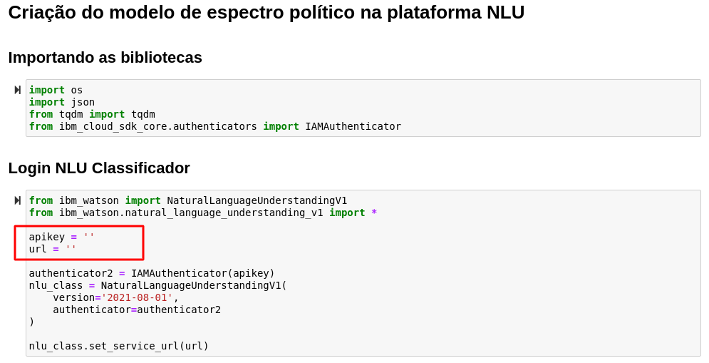

Enriquecimento dos dados via NLU
Chegou a hora de rodar os dados do dataset escolhido para aplicar o processo de enriquecimento via NLU agregado ao modelo criado anteriormente. A primeira etapa é o treinamento do modelo.
Treinamento do Modelo de Polaridade Política
A primeira parte deste tutorial consiste no treinamento de um modelo que analisa o quanto uma notícia tem polaridade política de Esquerda ou de Direita.
O modelo foi criado utilizando o ferramenta NLU e os dados utilizados para o treinamento foram notícias de jornais políticamente opostos.
A Carta Capital se institula como tendo um viés progressista, sendo alinhada à esquerda política.
Já a Jovem Pan foi considerada como sendo alinhada à direita política.
Coleta de dados
As notícias utilizadas foram coletadas por meio do script Treinamento.ipynb. A biblioteca Beautiful Soup da linguagem Python foi utilizada para fazer um web crawl do website de cada um dos jornais escolhidos. Esse script cria o arquivo training_data.json que contém os dados de treinamento e será utilizado para a criação do modelo.
Nota
Os passos seguintes podem ser encontrados no arquivo Enriquecimento dos Dados.ipynb e devem ser replicados
1. Filtragem do dataset
O dataset é filtrado para remover dados desnecessários e textos muito curtos
2. Login NLU

Nota
- Coloque as chaves de acesso do seu NLU que foi salvada anteriormente nas variáveis de configuração do ambiente
3. Treinamento do Modelo
Para o treinamento e criação do modelo é necessário enviar para o NLU os dados que foram coletados. Ao criar um modelo é obtido o seu model id que será utilizado durante o envio dos dados.
4. Passando os dados pelo NLU
Nessa etapa é realizao o envio dos dados para o NLU via API. Cada notícia é dividida em partes menores que 1500 caracteres (o NLU tem limite de 2000) e cada parte é enriquecida pelo NLU.